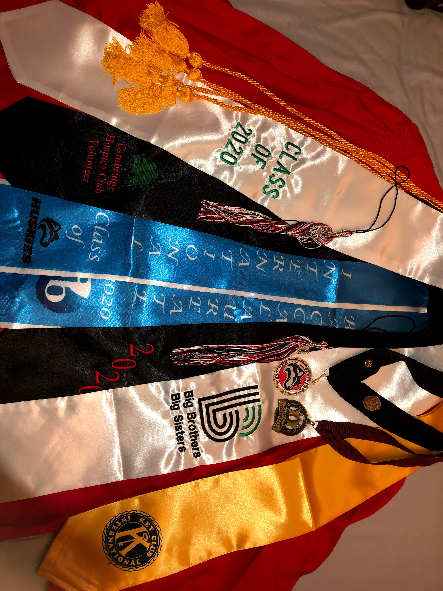
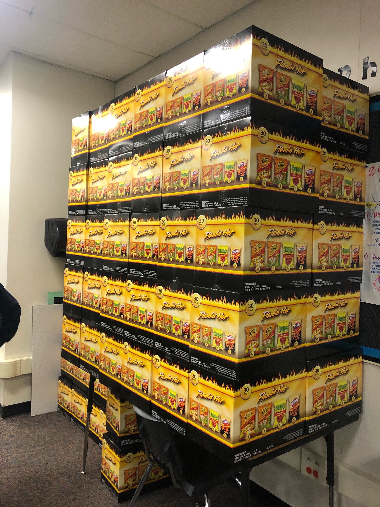
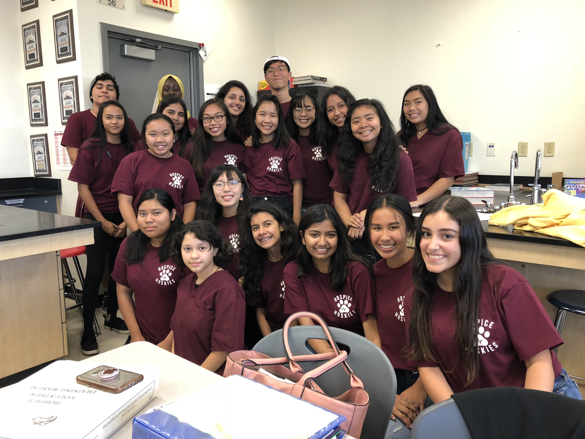
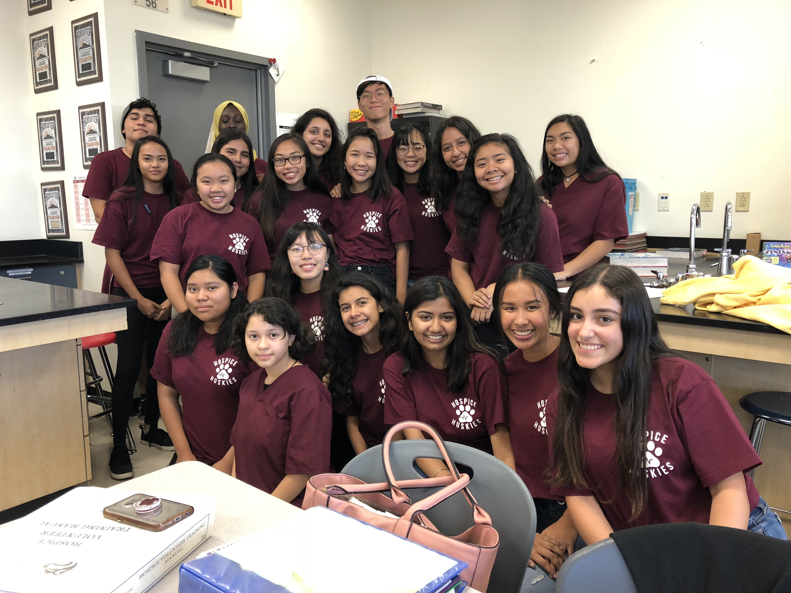
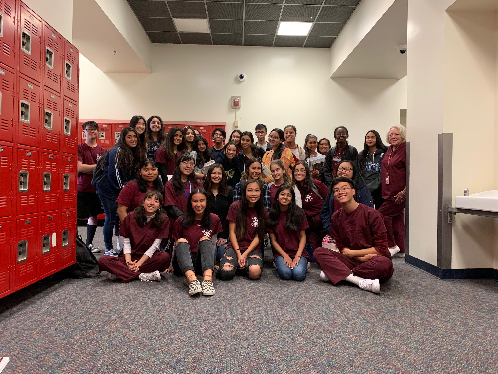
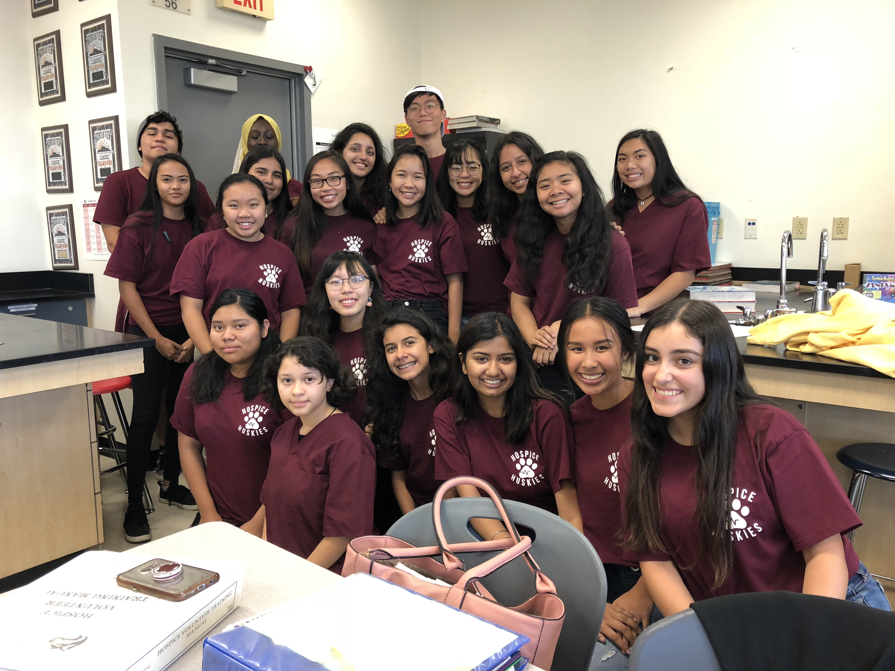
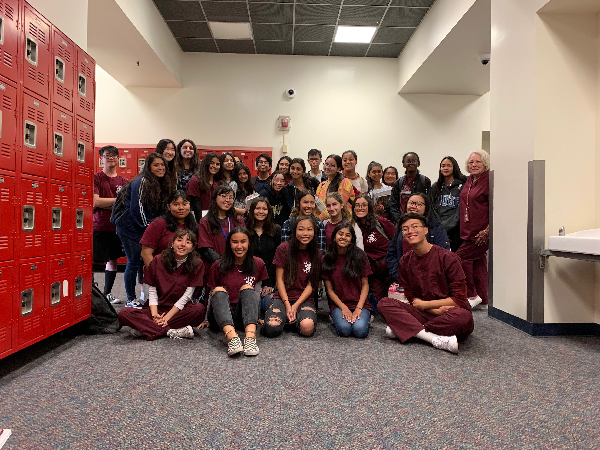

Katelyn Nguyen
I am a current first-year student at the University of California Riverside and I am majoring in Pre-Business with a focus in finance. I plan to use my Bachelor of Science in Business Administration to help people on a larger scale. I hope to help in the medical field somehow.
Currently, I am apart of three organizations. The first organization stems outside the university and is a personal organization I have been apart of since high school. In the college level of the organization, I mentor a high school student weekly throught the ifficult obstacles and life of a teenager. While offereing advice with personal concerns, I encourage my mentee to create new goals by giving her tips on how to do well in school and balance academics with her mental health.
In order to advance my career in using my degree to support the medical field on a larger scale, I am also apart of A Friend In Me which provides comfort care to pediatric cancer patients. I also am apart of Friends of Dialysis that spreads awareness about chronic kidney failure and dialysis treatment. In this organization, I am apart of the fundraising committee where we raise money for dialysis center.
Experience
President/Volunteer
• President who spread awareness and increased club publicity
• Volunteer for three years
• Offered comfort care to hospice patients
Waitress/Cashier
• Cashier responsible for taking orders and customer service
• Prepped appetizers and served meals
Mentor
• Mentored elementary student in high school
• Tutoring and bonding sessions
• Mentor high school student during college
Education
UC Riverside
University of California Riverside
University of California Riverside
Portfolio


 


